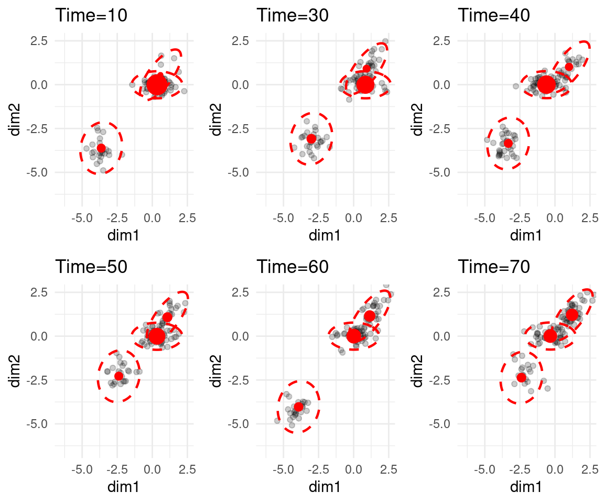

12 Testing the flowtrend method
We’re going to assume the flowtrend() function has been built, and test it
now.
12.1 1d example
Generate data.
set.seed(100)
dt <- gendat_1d(100, rep(100, 100))
dt_model <- gendat_1d(100, rep(100, 100), return_model = TRUE)
ylist = dt %>% dt2ylist()
x = dt %>% pull(time) %>% unique()
plot_1d(ylist)Next, we fit the model.
set.seed(18)
obj <- flowtrend(ylist = ylist,
x = x,
maxdev = 5,
numclust = 3,
l = 2,
l_prob = 2,
lambda = 1,
lambda_prob = .1,
admm_local_adapt = TRUE,
nrestart = 1,
verbose = TRUE)
## Also reorder the cluster labels of the truth, to match the fitted model.
ord = obj$mn[,1,] %>% colSums() %>% order(decreasing=TRUE)
lookup <- setNames(c(1:obj$numclust), ord)
dt_model$cluster = lookup[as.numeric(dt_model$cluster)] %>% as.factor()
## Reorder the cluster lables of the fitted model.
obj = reorder_clust(obj)The data and estimated model are shown here. The dashed lines are the true means.
plot_1d(ylist, obj, x = x, add_point = FALSE) +
geom_line(aes(x = time, y = mean, group = cluster),
data = dt_model,## %>% subset(time %ni% held_out),
linetype = "dashed", size=2, alpha = .7)The estimated probabilities are shown here.
plot_prob(obj) +
geom_line(aes(x = time, y = prob, group = cluster, color = cluster),
data = dt_model, linetype = "dashed") +
facet_wrap(~cluster)The objectives look like this:
set.seed(100)
dt <- gendat_1d(TT = 100, rep(100, 100))
dt_model <- gendat_1d(100, rep(100, 100), return_model = TRUE)
ylist = dt %>% dt2ylist()
x = dt %>% pull(time) %>% unique()
## Run it 10 times
objlist = lapply(1:10, function(ii){
print(ii)
set.seed(ii+100)
flowtrend_once(ylist = ylist,
x = x,
maxdev = 5,
numclust = 3,
l = 2,
l_prob = 2,
lambda = 1,
lambda_prob = .1,
verbose = TRUE)
})
## Make a table with objectives
objective_table = lapply(1:10, function(jj) tibble(objective = objlist[[jj]]$objectives) %>%
add_rownames("iter") %>%
mutate(iter = as.numeric(iter)) %>%
add_column(restart=jj)) %>%
bind_rows()
## Plot the objectives from the 10 runs
ggplot(objective_table) + geom_line(aes(x=iter, y=objective, group=restart))## [1] 1
##
EM iterations. 1 out of 999 with lapsed time 0 seconds and remaining time 0 seconds and will finish at 2023-11-14 10:23:01## Warning in la_admm_oneclust(K = (if (local_adapt) local_adapt_niter else 1), : ADMM didn't converge for one cluster.##
EM iterations. 2 out of 999 with lapsed time 1 seconds and remaining time 498 seconds and will finish at 2023-11-14 10:31:20
EM iterations. 3 out of 999 with lapsed time 1 seconds and remaining time 332 seconds and will finish at 2023-11-14 10:28:34## Warning in la_admm_oneclust(K = (if (local_adapt) local_adapt_niter else 1), : ADMM didn't converge for one cluster.##
EM iterations. 4 out of 999 with lapsed time 2 seconds and remaining time 498 seconds and will finish at 2023-11-14 10:31:21## Warning in la_admm_oneclust(K = (if (local_adapt) local_adapt_niter else 1), : ADMM didn't converge for one cluster.##
EM iterations. 5 out of 999 with lapsed time 2 seconds and remaining time 398 seconds and will finish at 2023-11-14 10:29:41## Warning in la_admm_oneclust(K = (if (local_adapt) local_adapt_niter else 1), : ADMM didn't converge for one cluster.
## Warning in la_admm_oneclust(K = (if (local_adapt) local_adapt_niter else 1), : ADMM didn't converge for one cluster.##
EM iterations. 6 out of 999 with lapsed time 3 seconds and remaining time 496 seconds and will finish at 2023-11-14 10:31:20## Warning in la_admm_oneclust(K = (if (local_adapt) local_adapt_niter else 1), : ADMM didn't converge for one cluster.
## Warning in la_admm_oneclust(K = (if (local_adapt) local_adapt_niter else 1), : ADMM didn't converge for one cluster.##
EM iterations. 7 out of 999 with lapsed time 3 seconds and remaining time 425 seconds and will finish at 2023-11-14 10:30:09## Warning in la_admm_oneclust(K = (if (local_adapt) local_adapt_niter else 1), : ADMM didn't converge for one cluster.##
EM iterations. 8 out of 999 with lapsed time 4 seconds and remaining time 496 seconds and will finish at 2023-11-14 10:31:21
EM iterations. 9 out of 999 with lapsed time 4 seconds and remaining time 440 seconds and will finish at 2023-11-14 10:30:25
EM iterations. 10 out of 999 with lapsed time 5 seconds and remaining time 494 seconds and will finish at 2023-11-14 10:31:20
EM iterations. 11 out of 999 with lapsed time 5 seconds and remaining time 449 seconds and will finish at 2023-11-14 10:30:35
EM iterations. 12 out of 999 with lapsed time 5 seconds and remaining time 411 seconds and will finish at 2023-11-14 10:29:58
EM iterations. 13 out of 999 with lapsed time 6 seconds and remaining time 455 seconds and will finish at 2023-11-14 10:30:42
EM iterations. 14 out of 999 with lapsed time 6 seconds and remaining time 422 seconds and will finish at 2023-11-14 10:30:09
EM iterations. 15 out of 999 with lapsed time 7 seconds and remaining time 459 seconds and will finish at 2023-11-14 10:30:47
EM iterations. 16 out of 999 with lapsed time 7 seconds and remaining time 430 seconds and will finish at 2023-11-14 10:30:18
EM iterations. 17 out of 999 with lapsed time 7 seconds and remaining time 404 seconds and will finish at 2023-11-14 10:29:53
EM iterations. 18 out of 999 with lapsed time 8 seconds and remaining time 436 seconds and will finish at 2023-11-14 10:30:25
EM iterations. 19 out of 999 with lapsed time 8 seconds and remaining time 413 seconds and will finish at 2023-11-14 10:30:03
EM iterations. 20 out of 999 with lapsed time 9 seconds and remaining time 441 seconds and will finish at 2023-11-14 10:30:31
EM iterations. 21 out of 999 with lapsed time 9 seconds and remaining time 419 seconds and will finish at 2023-11-14 10:30:09
EM iterations. 22 out of 999 with lapsed time 10 seconds and remaining time 444 seconds and will finish at 2023-11-14 10:30:35
EM iterations. 23 out of 999 with lapsed time 10 seconds and remaining time 424 seconds and will finish at 2023-11-14 10:30:15
EM iterations. 24 out of 999 with lapsed time 10 seconds and remaining time 406 seconds and will finish at 2023-11-14 10:29:57
EM iterations. 25 out of 999 with lapsed time 11 seconds and remaining time 429 seconds and will finish at 2023-11-14 10:30:21
EM iterations. 26 out of 999 with lapsed time 11 seconds and remaining time 412 seconds and will finish at 2023-11-14 10:30:04
EM iterations. 27 out of 999 with lapsed time 11 seconds and remaining time 396 seconds and will finish at 2023-11-14 10:29:48
EM iterations. 28 out of 999 with lapsed time 12 seconds and remaining time 416 seconds and will finish at 2023-11-14 10:30:09
EM iterations. 29 out of 999 with lapsed time 12 seconds and remaining time 401 seconds and will finish at 2023-11-14 10:29:54
EM iterations. 30 out of 999 with lapsed time 12 seconds and remaining time 388 seconds and will finish at 2023-11-14 10:29:41
EM iterations. 31 out of 999 with lapsed time 13 seconds and remaining time 406 seconds and will finish at 2023-11-14 10:30:00
EM iterations. 32 out of 999 with lapsed time 13 seconds and remaining time 393 seconds and will finish at 2023-11-14 10:29:47
EM iterations. 33 out of 999 with lapsed time 13 seconds and remaining time 381 seconds and will finish at 2023-11-14 10:29:35[1] 2
##
EM iterations. 1 out of 999 with lapsed time 0 seconds and remaining time 0 seconds and will finish at 2023-11-14 10:23:15
EM iterations. 2 out of 999 with lapsed time 0 seconds and remaining time 0 seconds and will finish at 2023-11-14 10:23:15## Warning in la_admm_oneclust(K = (if (local_adapt) local_adapt_niter else 1), : ADMM didn't converge for one cluster.##
EM iterations. 3 out of 999 with lapsed time 1 seconds and remaining time 332 seconds and will finish at 2023-11-14 10:28:47
EM iterations. 4 out of 999 with lapsed time 1 seconds and remaining time 249 seconds and will finish at 2023-11-14 10:27:25
EM iterations. 5 out of 999 with lapsed time 1 seconds and remaining time 199 seconds and will finish at 2023-11-14 10:26:35
EM iterations. 6 out of 999 with lapsed time 2 seconds and remaining time 331 seconds and will finish at 2023-11-14 10:28:47
EM iterations. 7 out of 999 with lapsed time 2 seconds and remaining time 283 seconds and will finish at 2023-11-14 10:28:00
EM iterations. 8 out of 999 with lapsed time 3 seconds and remaining time 372 seconds and will finish at 2023-11-14 10:29:29## Warning in la_admm_oneclust(K = (if (local_adapt) local_adapt_niter else 1), : ADMM didn't converge for one cluster.##
EM iterations. 9 out of 999 with lapsed time 3 seconds and remaining time 330 seconds and will finish at 2023-11-14 10:28:48## Warning in la_admm_oneclust(K = (if (local_adapt) local_adapt_niter else 1), : ADMM didn't converge for one cluster.##
EM iterations. 10 out of 999 with lapsed time 4 seconds and remaining time 396 seconds and will finish at 2023-11-14 10:29:55## Warning in la_admm_oneclust(K = (if (local_adapt) local_adapt_niter else 1), : ADMM didn't converge for one cluster.##
EM iterations. 11 out of 999 with lapsed time 5 seconds and remaining time 449 seconds and will finish at 2023-11-14 10:30:48
EM iterations. 12 out of 999 with lapsed time 5 seconds and remaining time 411 seconds and will finish at 2023-11-14 10:30:11
EM iterations. 13 out of 999 with lapsed time 6 seconds and remaining time 455 seconds and will finish at 2023-11-14 10:30:55
EM iterations. 14 out of 999 with lapsed time 6 seconds and remaining time 422 seconds and will finish at 2023-11-14 10:30:23
EM iterations. 15 out of 999 with lapsed time 7 seconds and remaining time 459 seconds and will finish at 2023-11-14 10:31:00
EM iterations. 16 out of 999 with lapsed time 7 seconds and remaining time 430 seconds and will finish at 2023-11-14 10:30:32
EM iterations. 17 out of 999 with lapsed time 8 seconds and remaining time 462 seconds and will finish at 2023-11-14 10:31:04
EM iterations. 18 out of 999 with lapsed time 8 seconds and remaining time 436 seconds and will finish at 2023-11-14 10:30:39
EM iterations. 19 out of 999 with lapsed time 8 seconds and remaining time 413 seconds and will finish at 2023-11-14 10:30:16
EM iterations. 20 out of 999 with lapsed time 9 seconds and remaining time 441 seconds and will finish at 2023-11-14 10:30:44
EM iterations. 21 out of 999 with lapsed time 9 seconds and remaining time 419 seconds and will finish at 2023-11-14 10:30:23
EM iterations. 22 out of 999 with lapsed time 9 seconds and remaining time 400 seconds and will finish at 2023-11-14 10:30:04
EM iterations. 23 out of 999 with lapsed time 10 seconds and remaining time 424 seconds and will finish at 2023-11-14 10:30:28[1] 3
##
EM iterations. 1 out of 999 with lapsed time 0 seconds and remaining time 0 seconds and will finish at 2023-11-14 10:23:25## Warning in la_admm_oneclust(K = (if (local_adapt) local_adapt_niter else 1), : ADMM didn't converge for one cluster.##
EM iterations. 2 out of 999 with lapsed time 1 seconds and remaining time 498 seconds and will finish at 2023-11-14 10:31:43
EM iterations. 3 out of 999 with lapsed time 1 seconds and remaining time 332 seconds and will finish at 2023-11-14 10:28:58
EM iterations. 4 out of 999 with lapsed time 1 seconds and remaining time 249 seconds and will finish at 2023-11-14 10:27:35
EM iterations. 5 out of 999 with lapsed time 2 seconds and remaining time 398 seconds and will finish at 2023-11-14 10:30:04
EM iterations. 6 out of 999 with lapsed time 2 seconds and remaining time 331 seconds and will finish at 2023-11-14 10:28:58
EM iterations. 7 out of 999 with lapsed time 3 seconds and remaining time 425 seconds and will finish at 2023-11-14 10:30:32
EM iterations. 8 out of 999 with lapsed time 3 seconds and remaining time 372 seconds and will finish at 2023-11-14 10:29:40
EM iterations. 9 out of 999 with lapsed time 3 seconds and remaining time 330 seconds and will finish at 2023-11-14 10:28:58
EM iterations. 10 out of 999 with lapsed time 4 seconds and remaining time 396 seconds and will finish at 2023-11-14 10:30:04
EM iterations. 11 out of 999 with lapsed time 4 seconds and remaining time 359 seconds and will finish at 2023-11-14 10:29:27
EM iterations. 12 out of 999 with lapsed time 4 seconds and remaining time 329 seconds and will finish at 2023-11-14 10:28:58
EM iterations. 13 out of 999 with lapsed time 4 seconds and remaining time 303 seconds and will finish at 2023-11-14 10:28:32
EM iterations. 14 out of 999 with lapsed time 5 seconds and remaining time 352 seconds and will finish at 2023-11-14 10:29:21
EM iterations. 15 out of 999 with lapsed time 5 seconds and remaining time 328 seconds and will finish at 2023-11-14 10:28:57
EM iterations. 16 out of 999 with lapsed time 5 seconds and remaining time 307 seconds and will finish at 2023-11-14 10:28:37
EM iterations. 17 out of 999 with lapsed time 5 seconds and remaining time 289 seconds and will finish at 2023-11-14 10:28:19
EM iterations. 18 out of 999 with lapsed time 6 seconds and remaining time 327 seconds and will finish at 2023-11-14 10:28:57
EM iterations. 19 out of 999 with lapsed time 6 seconds and remaining time 309 seconds and will finish at 2023-11-14 10:28:39[1] 4
##
EM iterations. 1 out of 999 with lapsed time 0 seconds and remaining time 0 seconds and will finish at 2023-11-14 10:23:31
EM iterations. 2 out of 999 with lapsed time 0 seconds and remaining time 0 seconds and will finish at 2023-11-14 10:23:31## Warning in la_admm_oneclust(K = (if (local_adapt) local_adapt_niter else 1), : ADMM didn't converge for one cluster.##
EM iterations. 3 out of 999 with lapsed time 1 seconds and remaining time 332 seconds and will finish at 2023-11-14 10:29:03
EM iterations. 4 out of 999 with lapsed time 1 seconds and remaining time 249 seconds and will finish at 2023-11-14 10:27:41
EM iterations. 5 out of 999 with lapsed time 2 seconds and remaining time 398 seconds and will finish at 2023-11-14 10:30:10## Warning in la_admm_oneclust(K = (if (local_adapt) local_adapt_niter else 1), : ADMM didn't converge for one cluster.##
EM iterations. 6 out of 999 with lapsed time 2 seconds and remaining time 331 seconds and will finish at 2023-11-14 10:29:04
EM iterations. 7 out of 999 with lapsed time 3 seconds and remaining time 425 seconds and will finish at 2023-11-14 10:30:38
EM iterations. 8 out of 999 with lapsed time 3 seconds and remaining time 372 seconds and will finish at 2023-11-14 10:29:46## Warning in la_admm_oneclust(K = (if (local_adapt) local_adapt_niter else 1), : ADMM didn't converge for one cluster.##
EM iterations. 9 out of 999 with lapsed time 3 seconds and remaining time 330 seconds and will finish at 2023-11-14 10:29:04
EM iterations. 10 out of 999 with lapsed time 4 seconds and remaining time 396 seconds and will finish at 2023-11-14 10:30:10
EM iterations. 11 out of 999 with lapsed time 4 seconds and remaining time 359 seconds and will finish at 2023-11-14 10:29:34
EM iterations. 12 out of 999 with lapsed time 5 seconds and remaining time 411 seconds and will finish at 2023-11-14 10:30:26
EM iterations. 13 out of 999 with lapsed time 5 seconds and remaining time 379 seconds and will finish at 2023-11-14 10:29:55
EM iterations. 14 out of 999 with lapsed time 6 seconds and remaining time 422 seconds and will finish at 2023-11-14 10:30:38
EM iterations. 15 out of 999 with lapsed time 6 seconds and remaining time 394 seconds and will finish at 2023-11-14 10:30:11
EM iterations. 16 out of 999 with lapsed time 6 seconds and remaining time 369 seconds and will finish at 2023-11-14 10:29:46
EM iterations. 17 out of 999 with lapsed time 7 seconds and remaining time 404 seconds and will finish at 2023-11-14 10:30:21
EM iterations. 18 out of 999 with lapsed time 7 seconds and remaining time 382 seconds and will finish at 2023-11-14 10:30:00
EM iterations. 19 out of 999 with lapsed time 7 seconds and remaining time 361 seconds and will finish at 2023-11-14 10:29:39
EM iterations. 20 out of 999 with lapsed time 8 seconds and remaining time 392 seconds and will finish at 2023-11-14 10:30:10
EM iterations. 21 out of 999 with lapsed time 8 seconds and remaining time 373 seconds and will finish at 2023-11-14 10:29:51
EM iterations. 22 out of 999 with lapsed time 8 seconds and remaining time 355 seconds and will finish at 2023-11-14 10:29:34
EM iterations. 23 out of 999 with lapsed time 8 seconds and remaining time 339 seconds and will finish at 2023-11-14 10:29:18
EM iterations. 24 out of 999 with lapsed time 9 seconds and remaining time 366 seconds and will finish at 2023-11-14 10:29:45
EM iterations. 25 out of 999 with lapsed time 9 seconds and remaining time 351 seconds and will finish at 2023-11-14 10:29:31
EM iterations. 26 out of 999 with lapsed time 9 seconds and remaining time 337 seconds and will finish at 2023-11-14 10:29:17[1] 5
##
EM iterations. 1 out of 999 with lapsed time 0 seconds and remaining time 0 seconds and will finish at 2023-11-14 10:23:40
EM iterations. 2 out of 999 with lapsed time 0 seconds and remaining time 0 seconds and will finish at 2023-11-14 10:23:40
EM iterations. 3 out of 999 with lapsed time 1 seconds and remaining time 332 seconds and will finish at 2023-11-14 10:29:13
EM iterations. 4 out of 999 with lapsed time 1 seconds and remaining time 249 seconds and will finish at 2023-11-14 10:27:50
EM iterations. 5 out of 999 with lapsed time 1 seconds and remaining time 199 seconds and will finish at 2023-11-14 10:27:01
EM iterations. 6 out of 999 with lapsed time 2 seconds and remaining time 331 seconds and will finish at 2023-11-14 10:29:13## Warning in la_admm_oneclust(K = (if (local_adapt) local_adapt_niter else 1), : ADMM didn't converge for one cluster.##
EM iterations. 7 out of 999 with lapsed time 3 seconds and remaining time 425 seconds and will finish at 2023-11-14 10:30:48
EM iterations. 8 out of 999 with lapsed time 3 seconds and remaining time 372 seconds and will finish at 2023-11-14 10:29:55## Warning in la_admm_oneclust(K = (if (local_adapt) local_adapt_niter else 1), : ADMM didn't converge for one cluster.##
EM iterations. 9 out of 999 with lapsed time 4 seconds and remaining time 440 seconds and will finish at 2023-11-14 10:31:04## Warning in la_admm_oneclust(K = (if (local_adapt) local_adapt_niter else 1), : ADMM didn't converge for one cluster.##
EM iterations. 10 out of 999 with lapsed time 5 seconds and remaining time 494 seconds and will finish at 2023-11-14 10:31:59## Warning in la_admm_oneclust(K = (if (local_adapt) local_adapt_niter else 1), : ADMM didn't converge for one cluster.##
EM iterations. 11 out of 999 with lapsed time 5 seconds and remaining time 449 seconds and will finish at 2023-11-14 10:31:15## Warning in la_admm_oneclust(K = (if (local_adapt) local_adapt_niter else 1), : ADMM didn't converge for one cluster.##
EM iterations. 12 out of 999 with lapsed time 6 seconds and remaining time 494 seconds and will finish at 2023-11-14 10:32:00
EM iterations. 13 out of 999 with lapsed time 7 seconds and remaining time 531 seconds and will finish at 2023-11-14 10:32:38
EM iterations. 14 out of 999 with lapsed time 7 seconds and remaining time 492 seconds and will finish at 2023-11-14 10:31:59
EM iterations. 15 out of 999 with lapsed time 8 seconds and remaining time 525 seconds and will finish at 2023-11-14 10:32:33
EM iterations. 16 out of 999 with lapsed time 8 seconds and remaining time 492 seconds and will finish at 2023-11-14 10:32:00
EM iterations. 17 out of 999 with lapsed time 8 seconds and remaining time 462 seconds and will finish at 2023-11-14 10:31:30
EM iterations. 18 out of 999 with lapsed time 8 seconds and remaining time 436 seconds and will finish at 2023-11-14 10:31:05
EM iterations. 19 out of 999 with lapsed time 9 seconds and remaining time 464 seconds and will finish at 2023-11-14 10:31:33
EM iterations. 20 out of 999 with lapsed time 9 seconds and remaining time 441 seconds and will finish at 2023-11-14 10:31:10
EM iterations. 21 out of 999 with lapsed time 9 seconds and remaining time 419 seconds and will finish at 2023-11-14 10:30:48
EM iterations. 22 out of 999 with lapsed time 9 seconds and remaining time 400 seconds and will finish at 2023-11-14 10:30:30
EM iterations. 23 out of 999 with lapsed time 10 seconds and remaining time 424 seconds and will finish at 2023-11-14 10:30:54
EM iterations. 24 out of 999 with lapsed time 10 seconds and remaining time 406 seconds and will finish at 2023-11-14 10:30:36
EM iterations. 25 out of 999 with lapsed time 10 seconds and remaining time 390 seconds and will finish at 2023-11-14 10:30:20
EM iterations. 26 out of 999 with lapsed time 10 seconds and remaining time 374 seconds and will finish at 2023-11-14 10:30:05
EM iterations. 27 out of 999 with lapsed time 11 seconds and remaining time 396 seconds and will finish at 2023-11-14 10:30:27
EM iterations. 28 out of 999 with lapsed time 11 seconds and remaining time 381 seconds and will finish at 2023-11-14 10:30:12
EM iterations. 29 out of 999 with lapsed time 11 seconds and remaining time 368 seconds and will finish at 2023-11-14 10:29:59
EM iterations. 30 out of 999 with lapsed time 11 seconds and remaining time 355 seconds and will finish at 2023-11-14 10:29:47
EM iterations. 31 out of 999 with lapsed time 12 seconds and remaining time 375 seconds and will finish at 2023-11-14 10:30:07
EM iterations. 32 out of 999 with lapsed time 12 seconds and remaining time 363 seconds and will finish at 2023-11-14 10:29:55
EM iterations. 33 out of 999 with lapsed time 12 seconds and remaining time 351 seconds and will finish at 2023-11-14 10:29:43
EM iterations. 34 out of 999 with lapsed time 13 seconds and remaining time 369 seconds and will finish at 2023-11-14 10:30:02
EM iterations. 35 out of 999 with lapsed time 13 seconds and remaining time 358 seconds and will finish at 2023-11-14 10:29:51
EM iterations. 36 out of 999 with lapsed time 13 seconds and remaining time 348 seconds and will finish at 2023-11-14 10:29:41
EM iterations. 37 out of 999 with lapsed time 13 seconds and remaining time 338 seconds and will finish at 2023-11-14 10:29:32
EM iterations. 38 out of 999 with lapsed time 14 seconds and remaining time 354 seconds and will finish at 2023-11-14 10:29:48
EM iterations. 39 out of 999 with lapsed time 14 seconds and remaining time 345 seconds and will finish at 2023-11-14 10:29:39
EM iterations. 40 out of 999 with lapsed time 14 seconds and remaining time 336 seconds and will finish at 2023-11-14 10:29:30
EM iterations. 41 out of 999 with lapsed time 15 seconds and remaining time 350 seconds and will finish at 2023-11-14 10:29:45
EM iterations. 42 out of 999 with lapsed time 15 seconds and remaining time 342 seconds and will finish at 2023-11-14 10:29:37
EM iterations. 43 out of 999 with lapsed time 15 seconds and remaining time 333 seconds and will finish at 2023-11-14 10:29:28
EM iterations. 44 out of 999 with lapsed time 15 seconds and remaining time 326 seconds and will finish at 2023-11-14 10:29:22
EM iterations. 45 out of 999 with lapsed time 16 seconds and remaining time 339 seconds and will finish at 2023-11-14 10:29:35
EM iterations. 46 out of 999 with lapsed time 16 seconds and remaining time 331 seconds and will finish at 2023-11-14 10:29:27
EM iterations. 47 out of 999 with lapsed time 16 seconds and remaining time 324 seconds and will finish at 2023-11-14 10:29:20
EM iterations. 48 out of 999 with lapsed time 16 seconds and remaining time 317 seconds and will finish at 2023-11-14 10:29:14
EM iterations. 49 out of 999 with lapsed time 17 seconds and remaining time 330 seconds and will finish at 2023-11-14 10:29:27
EM iterations. 50 out of 999 with lapsed time 17 seconds and remaining time 323 seconds and will finish at 2023-11-14 10:29:20[1] 6
##
EM iterations. 1 out of 999 with lapsed time 0 seconds and remaining time 0 seconds and will finish at 2023-11-14 10:23:58
EM iterations. 2 out of 999 with lapsed time 0 seconds and remaining time 0 seconds and will finish at 2023-11-14 10:23:58
EM iterations. 3 out of 999 with lapsed time 1 seconds and remaining time 332 seconds and will finish at 2023-11-14 10:29:30
EM iterations. 4 out of 999 with lapsed time 1 seconds and remaining time 249 seconds and will finish at 2023-11-14 10:28:08
EM iterations. 5 out of 999 with lapsed time 1 seconds and remaining time 199 seconds and will finish at 2023-11-14 10:27:18
EM iterations. 6 out of 999 with lapsed time 2 seconds and remaining time 331 seconds and will finish at 2023-11-14 10:29:30
EM iterations. 7 out of 999 with lapsed time 2 seconds and remaining time 283 seconds and will finish at 2023-11-14 10:28:42
EM iterations. 8 out of 999 with lapsed time 2 seconds and remaining time 248 seconds and will finish at 2023-11-14 10:28:08
EM iterations. 9 out of 999 with lapsed time 2 seconds and remaining time 220 seconds and will finish at 2023-11-14 10:27:40
EM iterations. 10 out of 999 with lapsed time 3 seconds and remaining time 297 seconds and will finish at 2023-11-14 10:28:57
EM iterations. 11 out of 999 with lapsed time 3 seconds and remaining time 269 seconds and will finish at 2023-11-14 10:28:29
EM iterations. 12 out of 999 with lapsed time 3 seconds and remaining time 247 seconds and will finish at 2023-11-14 10:28:08
EM iterations. 13 out of 999 with lapsed time 3 seconds and remaining time 228 seconds and will finish at 2023-11-14 10:27:49
EM iterations. 14 out of 999 with lapsed time 4 seconds and remaining time 281 seconds and will finish at 2023-11-14 10:28:42
EM iterations. 15 out of 999 with lapsed time 4 seconds and remaining time 262 seconds and will finish at 2023-11-14 10:28:23
EM iterations. 16 out of 999 with lapsed time 4 seconds and remaining time 246 seconds and will finish at 2023-11-14 10:28:08[1] 7
##
EM iterations. 1 out of 999 with lapsed time 0 seconds and remaining time 0 seconds and will finish at 2023-11-14 10:24:02## Warning in la_admm_oneclust(K = (if (local_adapt) local_adapt_niter else 1), : ADMM didn't converge for one cluster.##
EM iterations. 2 out of 999 with lapsed time 0 seconds and remaining time 0 seconds and will finish at 2023-11-14 10:24:02
EM iterations. 3 out of 999 with lapsed time 1 seconds and remaining time 332 seconds and will finish at 2023-11-14 10:29:35## Warning in la_admm_oneclust(K = (if (local_adapt) local_adapt_niter else 1), : ADMM didn't converge for one cluster.##
EM iterations. 4 out of 999 with lapsed time 1 seconds and remaining time 249 seconds and will finish at 2023-11-14 10:28:12## Warning in la_admm_oneclust(K = (if (local_adapt) local_adapt_niter else 1), : ADMM didn't converge for one cluster.##
EM iterations. 5 out of 999 with lapsed time 2 seconds and remaining time 398 seconds and will finish at 2023-11-14 10:30:42## Warning in la_admm_oneclust(K = (if (local_adapt) local_adapt_niter else 1), : ADMM didn't converge for one cluster.##
EM iterations. 6 out of 999 with lapsed time 2 seconds and remaining time 331 seconds and will finish at 2023-11-14 10:29:35
EM iterations. 7 out of 999 with lapsed time 2 seconds and remaining time 283 seconds and will finish at 2023-11-14 10:28:47
EM iterations. 8 out of 999 with lapsed time 3 seconds and remaining time 372 seconds and will finish at 2023-11-14 10:30:17
EM iterations. 9 out of 999 with lapsed time 3 seconds and remaining time 330 seconds and will finish at 2023-11-14 10:29:35
EM iterations. 10 out of 999 with lapsed time 4 seconds and remaining time 396 seconds and will finish at 2023-11-14 10:30:41
EM iterations. 11 out of 999 with lapsed time 4 seconds and remaining time 359 seconds and will finish at 2023-11-14 10:30:05
EM iterations. 12 out of 999 with lapsed time 5 seconds and remaining time 411 seconds and will finish at 2023-11-14 10:30:57
EM iterations. 13 out of 999 with lapsed time 5 seconds and remaining time 379 seconds and will finish at 2023-11-14 10:30:26## Warning in la_admm_oneclust(K = (if (local_adapt) local_adapt_niter else 1), : ADMM didn't converge for one cluster.##
EM iterations. 14 out of 999 with lapsed time 6 seconds and remaining time 422 seconds and will finish at 2023-11-14 10:31:10## Warning in la_admm_oneclust(K = (if (local_adapt) local_adapt_niter else 1), : ADMM didn't converge for one cluster.##
EM iterations. 15 out of 999 with lapsed time 6 seconds and remaining time 394 seconds and will finish at 2023-11-14 10:30:42## Warning in la_admm_oneclust(K = (if (local_adapt) local_adapt_niter else 1), : ADMM didn't converge for one cluster.##
EM iterations. 16 out of 999 with lapsed time 7 seconds and remaining time 430 seconds and will finish at 2023-11-14 10:31:19## Warning in la_admm_oneclust(K = (if (local_adapt) local_adapt_niter else 1), : ADMM didn't converge for one cluster.##
EM iterations. 17 out of 999 with lapsed time 7 seconds and remaining time 404 seconds and will finish at 2023-11-14 10:30:53## Warning in la_admm_oneclust(K = (if (local_adapt) local_adapt_niter else 1), : ADMM didn't converge for one cluster.##
EM iterations. 18 out of 999 with lapsed time 8 seconds and remaining time 436 seconds and will finish at 2023-11-14 10:31:26
EM iterations. 19 out of 999 with lapsed time 9 seconds and remaining time 464 seconds and will finish at 2023-11-14 10:31:55
EM iterations. 20 out of 999 with lapsed time 9 seconds and remaining time 441 seconds and will finish at 2023-11-14 10:31:32
EM iterations. 21 out of 999 with lapsed time 9 seconds and remaining time 419 seconds and will finish at 2023-11-14 10:31:10
EM iterations. 22 out of 999 with lapsed time 10 seconds and remaining time 444 seconds and will finish at 2023-11-14 10:31:36
EM iterations. 23 out of 999 with lapsed time 10 seconds and remaining time 424 seconds and will finish at 2023-11-14 10:31:16
EM iterations. 24 out of 999 with lapsed time 10 seconds and remaining time 406 seconds and will finish at 2023-11-14 10:30:58
EM iterations. 25 out of 999 with lapsed time 11 seconds and remaining time 429 seconds and will finish at 2023-11-14 10:31:22
EM iterations. 26 out of 999 with lapsed time 11 seconds and remaining time 412 seconds and will finish at 2023-11-14 10:31:05[1] 8
##
EM iterations. 1 out of 999 with lapsed time 0 seconds and remaining time 0 seconds and will finish at 2023-11-14 10:24:13
EM iterations. 2 out of 999 with lapsed time 0 seconds and remaining time 0 seconds and will finish at 2023-11-14 10:24:13## Warning in la_admm_oneclust(K = (if (local_adapt) local_adapt_niter else 1), : ADMM didn't converge for one cluster.##
EM iterations. 3 out of 999 with lapsed time 1 seconds and remaining time 332 seconds and will finish at 2023-11-14 10:29:46
EM iterations. 4 out of 999 with lapsed time 1 seconds and remaining time 249 seconds and will finish at 2023-11-14 10:28:23
EM iterations. 5 out of 999 with lapsed time 2 seconds and remaining time 398 seconds and will finish at 2023-11-14 10:30:53## Warning in la_admm_oneclust(K = (if (local_adapt) local_adapt_niter else 1), : ADMM didn't converge for one cluster.##
EM iterations. 6 out of 999 with lapsed time 2 seconds and remaining time 331 seconds and will finish at 2023-11-14 10:29:46
EM iterations. 7 out of 999 with lapsed time 3 seconds and remaining time 425 seconds and will finish at 2023-11-14 10:31:21## Warning in la_admm_oneclust(K = (if (local_adapt) local_adapt_niter else 1), : ADMM didn't converge for one cluster.##
EM iterations. 8 out of 999 with lapsed time 3 seconds and remaining time 372 seconds and will finish at 2023-11-14 10:30:28## Warning in la_admm_oneclust(K = (if (local_adapt) local_adapt_niter else 1), : ADMM didn't converge for one cluster.##
EM iterations. 9 out of 999 with lapsed time 4 seconds and remaining time 440 seconds and will finish at 2023-11-14 10:31:37
EM iterations. 10 out of 999 with lapsed time 4 seconds and remaining time 396 seconds and will finish at 2023-11-14 10:30:53
EM iterations. 11 out of 999 with lapsed time 5 seconds and remaining time 449 seconds and will finish at 2023-11-14 10:31:47
EM iterations. 12 out of 999 with lapsed time 5 seconds and remaining time 411 seconds and will finish at 2023-11-14 10:31:09
EM iterations. 13 out of 999 with lapsed time 6 seconds and remaining time 455 seconds and will finish at 2023-11-14 10:31:54
EM iterations. 14 out of 999 with lapsed time 6 seconds and remaining time 422 seconds and will finish at 2023-11-14 10:31:21
EM iterations. 15 out of 999 with lapsed time 7 seconds and remaining time 459 seconds and will finish at 2023-11-14 10:31:59
EM iterations. 16 out of 999 with lapsed time 7 seconds and remaining time 430 seconds and will finish at 2023-11-14 10:31:30
EM iterations. 17 out of 999 with lapsed time 7 seconds and remaining time 404 seconds and will finish at 2023-11-14 10:31:04
EM iterations. 18 out of 999 with lapsed time 8 seconds and remaining time 436 seconds and will finish at 2023-11-14 10:31:37
EM iterations. 19 out of 999 with lapsed time 8 seconds and remaining time 413 seconds and will finish at 2023-11-14 10:31:14[1] 9
##
EM iterations. 1 out of 999 with lapsed time 0 seconds and remaining time 0 seconds and will finish at 2023-11-14 10:24:21## Warning in la_admm_oneclust(K = (if (local_adapt) local_adapt_niter else 1), : ADMM didn't converge for one cluster.##
EM iterations. 2 out of 999 with lapsed time 0 seconds and remaining time 0 seconds and will finish at 2023-11-14 10:24:22
EM iterations. 3 out of 999 with lapsed time 1 seconds and remaining time 332 seconds and will finish at 2023-11-14 10:29:54
EM iterations. 4 out of 999 with lapsed time 1 seconds and remaining time 249 seconds and will finish at 2023-11-14 10:28:31
EM iterations. 5 out of 999 with lapsed time 1 seconds and remaining time 199 seconds and will finish at 2023-11-14 10:27:42
EM iterations. 6 out of 999 with lapsed time 2 seconds and remaining time 331 seconds and will finish at 2023-11-14 10:29:54
EM iterations. 7 out of 999 with lapsed time 2 seconds and remaining time 283 seconds and will finish at 2023-11-14 10:29:06
EM iterations. 8 out of 999 with lapsed time 2 seconds and remaining time 248 seconds and will finish at 2023-11-14 10:28:32
EM iterations. 9 out of 999 with lapsed time 3 seconds and remaining time 330 seconds and will finish at 2023-11-14 10:29:54
EM iterations. 10 out of 999 with lapsed time 3 seconds and remaining time 297 seconds and will finish at 2023-11-14 10:29:21
EM iterations. 11 out of 999 with lapsed time 3 seconds and remaining time 269 seconds and will finish at 2023-11-14 10:28:54
EM iterations. 12 out of 999 with lapsed time 4 seconds and remaining time 329 seconds and will finish at 2023-11-14 10:29:54
EM iterations. 13 out of 999 with lapsed time 4 seconds and remaining time 303 seconds and will finish at 2023-11-14 10:29:29
EM iterations. 14 out of 999 with lapsed time 5 seconds and remaining time 352 seconds and will finish at 2023-11-14 10:30:18
EM iterations. 15 out of 999 with lapsed time 5 seconds and remaining time 328 seconds and will finish at 2023-11-14 10:29:54
EM iterations. 16 out of 999 with lapsed time 5 seconds and remaining time 307 seconds and will finish at 2023-11-14 10:29:34
EM iterations. 17 out of 999 with lapsed time 6 seconds and remaining time 347 seconds and will finish at 2023-11-14 10:30:14
EM iterations. 18 out of 999 with lapsed time 6 seconds and remaining time 327 seconds and will finish at 2023-11-14 10:29:54
EM iterations. 19 out of 999 with lapsed time 6 seconds and remaining time 309 seconds and will finish at 2023-11-14 10:29:37
EM iterations. 20 out of 999 with lapsed time 6 seconds and remaining time 294 seconds and will finish at 2023-11-14 10:29:22
EM iterations. 21 out of 999 with lapsed time 7 seconds and remaining time 326 seconds and will finish at 2023-11-14 10:29:54
EM iterations. 22 out of 999 with lapsed time 7 seconds and remaining time 311 seconds and will finish at 2023-11-14 10:29:39
EM iterations. 23 out of 999 with lapsed time 7 seconds and remaining time 297 seconds and will finish at 2023-11-14 10:29:25
EM iterations. 24 out of 999 with lapsed time 7 seconds and remaining time 284 seconds and will finish at 2023-11-14 10:29:12[1] 10
##
EM iterations. 1 out of 999 with lapsed time 0 seconds and remaining time 0 seconds and will finish at 2023-11-14 10:24:29
EM iterations. 2 out of 999 with lapsed time 0 seconds and remaining time 0 seconds and will finish at 2023-11-14 10:24:29## Warning in la_admm_oneclust(K = (if (local_adapt) local_adapt_niter else 1), : ADMM didn't converge for one cluster.##
EM iterations. 3 out of 999 with lapsed time 1 seconds and remaining time 332 seconds and will finish at 2023-11-14 10:30:02
EM iterations. 4 out of 999 with lapsed time 1 seconds and remaining time 249 seconds and will finish at 2023-11-14 10:28:39
EM iterations. 5 out of 999 with lapsed time 1 seconds and remaining time 199 seconds and will finish at 2023-11-14 10:27:49
EM iterations. 6 out of 999 with lapsed time 2 seconds and remaining time 331 seconds and will finish at 2023-11-14 10:30:01
EM iterations. 7 out of 999 with lapsed time 2 seconds and remaining time 283 seconds and will finish at 2023-11-14 10:29:14
EM iterations. 8 out of 999 with lapsed time 2 seconds and remaining time 248 seconds and will finish at 2023-11-14 10:28:39
EM iterations. 9 out of 999 with lapsed time 3 seconds and remaining time 330 seconds and will finish at 2023-11-14 10:30:01
EM iterations. 10 out of 999 with lapsed time 3 seconds and remaining time 297 seconds and will finish at 2023-11-14 10:29:28
EM iterations. 11 out of 999 with lapsed time 3 seconds and remaining time 269 seconds and will finish at 2023-11-14 10:29:01
EM iterations. 12 out of 999 with lapsed time 3 seconds and remaining time 247 seconds and will finish at 2023-11-14 10:28:39
EM iterations. 13 out of 999 with lapsed time 4 seconds and remaining time 303 seconds and will finish at 2023-11-14 10:29:35
EM iterations. 14 out of 999 with lapsed time 4 seconds and remaining time 281 seconds and will finish at 2023-11-14 10:29:13
EM iterations. 15 out of 999 with lapsed time 4 seconds and remaining time 262 seconds and will finish at 2023-11-14 10:28:55
EM iterations. 16 out of 999 with lapsed time 4 seconds and remaining time 246 seconds and will finish at 2023-11-14 10:28:39
EM iterations. 17 out of 999 with lapsed time 4 seconds and remaining time 231 seconds and will finish at 2023-11-14 10:28:24
EM iterations. 18 out of 999 with lapsed time 4 seconds and remaining time 218 seconds and will finish at 2023-11-14 10:28:11
EM iterations. 19 out of 999 with lapsed time 5 seconds and remaining time 258 seconds and will finish at 2023-11-14 10:28:51
EM iterations. 20 out of 999 with lapsed time 5 seconds and remaining time 245 seconds and will finish at 2023-11-14 10:28:38
EM iterations. 21 out of 999 with lapsed time 5 seconds and remaining time 233 seconds and will finish at 2023-11-14 10:28:27
EM iterations. 22 out of 999 with lapsed time 5 seconds and remaining time 222 seconds and will finish at 2023-11-14 10:28:16
EM iterations. 23 out of 999 with lapsed time 5 seconds and remaining time 212 seconds and will finish at 2023-11-14 10:28:06
EM iterations. 24 out of 999 with lapsed time 5 seconds and remaining time 203 seconds and will finish at 2023-11-14 10:27:57
EM iterations. 25 out of 999 with lapsed time 5 seconds and remaining time 195 seconds and will finish at 2023-11-14 10:27:49
EM iterations. 26 out of 999 with lapsed time 6 seconds and remaining time 225 seconds and will finish at 2023-11-14 10:28:19
EM iterations. 27 out of 999 with lapsed time 6 seconds and remaining time 216 seconds and will finish at 2023-11-14 10:28:11
EM iterations. 28 out of 999 with lapsed time 6 seconds and remaining time 208 seconds and will finish at 2023-11-14 10:28:03
EM iterations. 29 out of 999 with lapsed time 6 seconds and remaining time 201 seconds and will finish at 2023-11-14 10:27:56
EM iterations. 30 out of 999 with lapsed time 6 seconds and remaining time 194 seconds and will finish at 2023-11-14 10:27:49
EM iterations. 31 out of 999 with lapsed time 7 seconds and remaining time 219 seconds and will finish at 2023-11-14 10:28:14
EM iterations. 32 out of 999 with lapsed time 7 seconds and remaining time 212 seconds and will finish at 2023-11-14 10:28:07
EM iterations. 33 out of 999 with lapsed time 7 seconds and remaining time 205 seconds and will finish at 2023-11-14 10:28:01## Warning: `add_rownames()` was deprecated in dplyr 1.0.0.
## ℹ Please use `tibble::rownames_to_column()` instead.
## ℹ The deprecated feature was likely used in the litr package.
## Please report the issue to the authors.
## This warning is displayed once every 8 hours.
## Call `lifecycle::last_lifecycle_warnings()` to see where this warning was generated.
12.2 Testing monotonicity of objective values
The objective value (that is, the penalized log likelihood) should be monotone decreasing across EM algorithm iterations.
(Note: because the admm is imperfect and stops early sometimes, the objective is sometimes non-monotone. See the example from a few sections up!)
testthat::test_that("Objective value decreases over EM iterations.",{
for(iseed in 1:5){
print(iseed)
## Generate synthetic data
set.seed(iseed*100)
dt <- gendat_1d(100, rep(100, 100))
ylist = dt %>% dt2ylist()
x = dt %>% pull(time) %>% unique()
## Fit model
obj <- flowtrend(ylist = ylist,
x = x,
maxdev = 5,
numclust = 3,
lambda = 0.02,
l = 1,
l_prob = 2,
lambda_prob = 0.05,
nrestart = 1)
## Test objective monotonicity
niter_end = length(obj$objective)
testthat::expect_true(all(diff(obj$objective) < 1E-4))
## Make a plot
g = ggplot(tibble(iter=1:niter_end, objective=obj$objectives)) +
geom_point(aes(x=iter, y=objective)) +
geom_line(aes(x=iter, y=objective)) +
ggtitle(paste0("Seed=", iseed*100))
print(g)
}
})## [1] 1
## [1] 2
## [1] 3
## [1] 4
## [1] 5
## Test passed12.3 2d example
Next, we try out flowtrend on a synthetic 2d data example.
set.seed(100)
dt <- gendat_2d(100, rep(100, 100))
set.seed(10)
obj <- flowtrend(ylist = dt$ylist,
maxdev = 5,
numclust = 3,
lambda = 0.02,
l = 1,
l_prob = 2,
lambda_prob = .005,
nrestart = 3)
## Put together means into a long data frame
numclust = 3
mnlist = lapply(1:numclust, function(iclust){
one_mnmat = obj$mn[,,iclust]
colnames(one_mnmat) = paste0("dim", 1:2)
one_mnmat %>% as_tibble() %>% add_column(cluster = iclust)
})
mnmat = do.call(rbind, mnlist)
## Show estimated model at six time points.
timelist = c(10, 30,40,50,60,70)
plist = lapply(timelist, function(tt){
y = dt$ylist[[tt]] %>% as_tibble()
colnames(y) = paste0("dim", 1:2)
p = y %>% ggplot() + geom_point(aes(x=dim1, y=dim2), alpha =.2)
numclust = 3
mn_colours = rep("red", 3)
for(iclust in 1:numclust){
## Add ellipse
el = ellipse::ellipse(x = obj$sigma[iclust,,], centre = obj$mn[tt,,iclust]) %>% as_tibble()
p = p + geom_path(aes(x = x, y = y), data = el, colour = mn_colours[iclust], lty = 2,
lwd = pmin(obj$prob[tt,iclust] * 8, 0.8))
## Add mean
p = p + geom_point(aes(x = dim1, y = dim2),
data = mnmat %>% subset(cluster == iclust) %>% .[tt,],
colour = mn_colours[iclust],
## size = rel(3))
size = obj$prob[tt,iclust] * 10)
}
p = p + ggtitle(paste0("Time=", tt)) +
coord_cartesian(xlim = c(-6.5, 2.5), ylim = c(-6.5, 2.5)) +
theme_minimal()
return(p)
})
library(ggpubr)
do.call(ggarrange, c(plist, ncol=3, nrow=2))## Warning in la_admm_oneclust(K = (if (local_adapt) local_adapt_niter else 1), : ADMM didn't converge for one cluster.
## Warning in la_admm_oneclust(K = (if (local_adapt) local_adapt_niter else 1), : ADMM didn't converge for one cluster.
## Warning in la_admm_oneclust(K = (if (local_adapt) local_adapt_niter else 1), : ADMM didn't converge for one cluster.